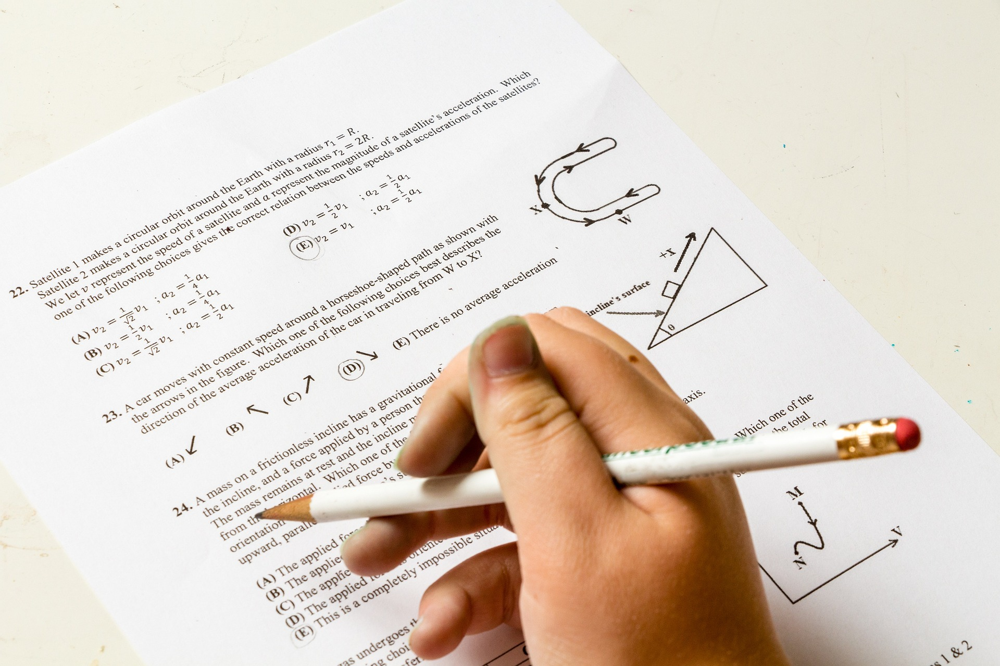

Complex Topics for the Everyday Person
In our everyday lives we can take for granted all the math going on around us. We tend to focus on only what we are doing. We drive to work, we buy lunch from the drive through, we spend about 9 hours working and 8 hours sleeping. In the time in between we have chores and friends and family obligations it can feel like there are not enough hours in the day! So why should we spend any time thinking about complex math topics? Well put simply we will have to worry about it sometimes whether we want to or not, so we might as well be good at it.
Taxes, electrical work, personal finance, these all require math to some extent. Math can also make life easier in the times when we may not need it per se.
 One famous example is that a 12 inch pizza is not actually just a little bit bigger that a 10 inch pizza it is actually 1.44 times as big! That is something you might want to take into consideration when buying the food for your next party.
One famous example is that a 12 inch pizza is not actually just a little bit bigger that a 10 inch pizza it is actually 1.44 times as big! That is something you might want to take into consideration when buying the food for your next party.
Okay so we know that math is important, and we know that it is useful. The problem becomes that math is also addictive. Once you have mastered some of the basics you may want to look at some of the more advanced topics. However, these are often presented in a way that is unapproachable. Here we will take a look at some of the slightly more complex math that has a real impact on your life and we will try to do it in an understandable way.